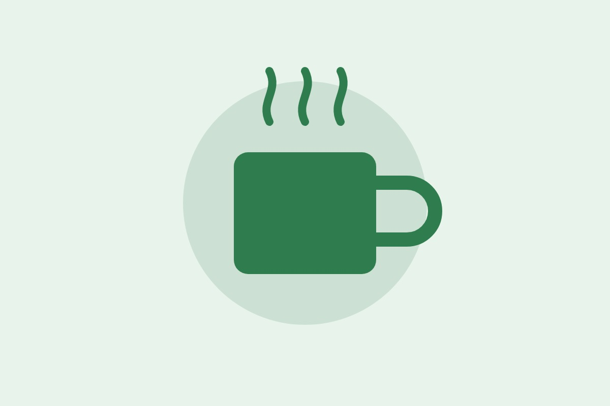
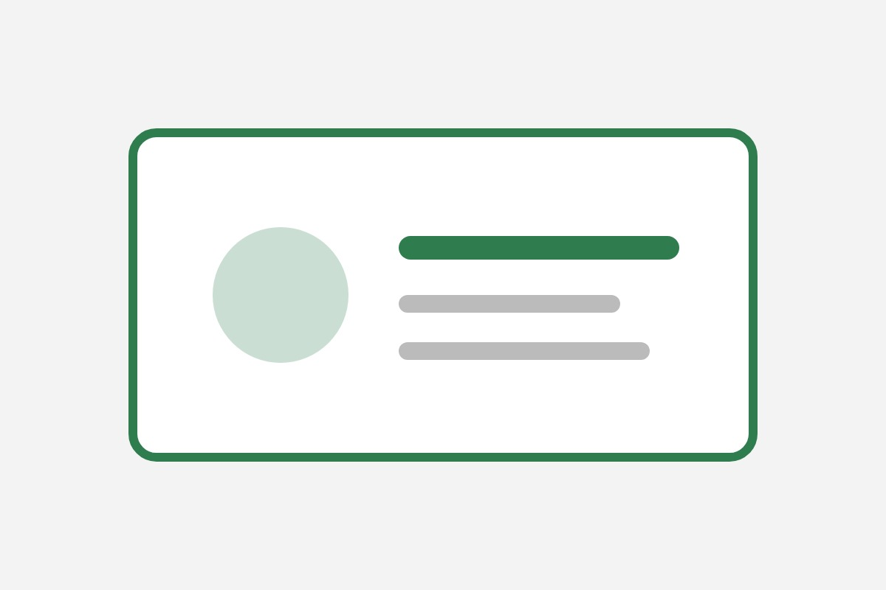

Visit our cozy cafe for freshly brewed coffee, tasty snacks and a calm place to work or relax.
Visit Us

Green Bean Cafe started as a small corner shop. Today we serve hundreds of happy customers every week, and we still make every cup by hand.
We love local farmers, simple food and good conversation.
12 Main Road, Surat. Open daily 8 AM to 10 PM
Get Directions